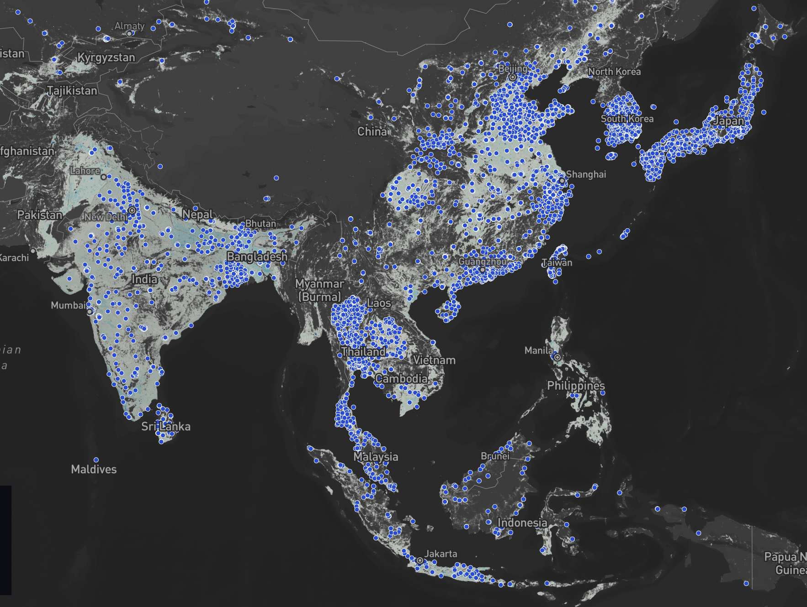

Investigating Disparities in Global Air Quality Monitoring
This HTML-based website explores the spatial distribution of air quality sensors across the globe. The site uses interactive maps and charts to tell a research-driven story about the inequalities present in sensor coverage, and investigates potential drivers of these disparities. It highlights a stark divide in urban analytics and data accessibility between the Global North and Global South.